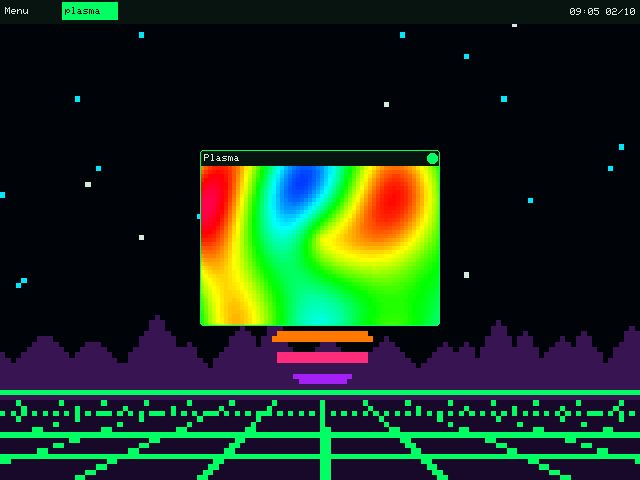

Two BREAK issues on the bounce, so we're owed a proper MAKE. And this one's a bit personal: for the last few weeks I've been building an operating system. A small one — desktop, windows, a terminal, a tracker, a handful of games — called acid OS. Today you boot it, write an app for it, and then crash that app on purpose to see why the rest of the system doesn't care. It's free, it's open source, and you don't need to flash anything.
> this week in security
Three quick ones — and a theme you'll spot again in the project: keep things in separate boxes.
A robot broke into a security charity — on its own. On 21 September an autonomous AI agent, with no human driving it, chained two unknown bugs in Zammad (a popular open-source helpdesk) and got root on a server at DIVD, the Dutch volunteer group that literally warns people about vulnerabilities. DIVD called it "loud and very, very messy" — it even tripped over its own password-spraying. What stopped it going further wasn't cleverness: their network was split into compartments.
→ do this: if you run anything at home that faces the internet — a NAS, a Plex box, a little server — switch on its automatic updates, and put it on its own network (your router's "guest" Wi-Fi will do). One break-in, one room. (source)
Police took down a ransomware gang allegedly run by a 16-year-old. Operation KillSwitch, on 30 September, seized KillSec's servers and leak site — and at least 110 terabytes of stolen data — after around 1,000 attacks. Searches took place in four countries, the UK among them.
→ do this: the thing that makes ransomware toothless is a backup the attacker can't reach. Copy the photos and documents you'd cry over to an external drive this weekend, then unplug it. (source)
Chrome patched a bug that attackers were already using. CVE-2026-85046, a flaw in Chrome's JavaScript engine, let a booby-trapped web page run code on your machine — and Google confirmed it was being exploited in the wild. Fixed in Chrome 152.
→ do this: in Chrome go to ⋮ → Help → About Google Chrome. If it says "Relaunch", the fix is sitting there doing nothing until you click it. (source)
> beginner's corner
Today's project is all about apps that live in their own little box. Your phone already works that way — the trick is checking what each box is allowed to reach.
Do a two-minute permissions audit. On an iPhone open Settings → Privacy & Security; on Android, search Settings for Permission manager. Tap Location, then Microphone, then Camera. Anything that doesn't obviously need it — a torch app with your location, a game with your microphone — set it to Never or Ask every time. An app can't leak what it was never given.
The project — boot your own OS
acid OS runs in a window on your Linux desktop, so nothing gets installed over anything. You'll boot it, give it a new app, then break that app and watch the OS shrug.
What you'll need: a Linux machine with a desktop (X11 or Wayland — any distro), about ten
minutes for the first build, and a willingness to type cargo.
Prefer to grab the finished app? plasma.lua and
plasma.app.toml — drop both into v3/apps/.
01Boot it
Install the build tools (Debian/Ubuntu shown — the Fedora and Arch lines are in the repo's README):
sudo apt install build-essential pkg-config libasound2-dev git curl
curl --proto '=https' --tlsv1.2 -sSf https://sh.rustup.rs | sh
source "$HOME/.cargo/env"Then grab it and run it:
git clone https://github.com/NorfolkHacker/Acid-OS-V3.git
cd Acid-OS-V3
cargo run --release --manifest-path v3/Cargo.toml -p acid-osThe first build takes a few minutes; after that it boots in seconds. Pick a screen size (or just wait three seconds) and you're on the desktop. Have a poke: Menu is top left, and the File Manager → Games folder has AcidStorm, Acid Invaders and a Tetris that will eat your evening. Stay in the top folder of the repo when you run it — acid OS finds its apps by a path relative to it.
02Bring the plasma back
Remember the plasma from issue #00 — four sine waves stacked into something
that looks alive? We're giving it a home. An acid OS app is just two files in
v3/apps/: a Lua script, and a tiny "manifest" saying what it's called and how big its
window is.
v3/apps/plasma.app.toml
name = Plasma
w = 240
h = 176
desc = Issue #00's plasma, now an appv3/apps/plasma.lua
local Plasma = AcidGame:extend("Plasma")
Plasma.TICK_MS = 40 -- 25 frames a second
local CELL = 4 -- each "pixel" is a 4x4 block
local TOP = 16 -- the title bar is 16px tall
function Plasma:on_create()
self.w, self.h = acid_window_size()
self.cx, self.cy = self.w // 2, self.h // 2 -- where the ripple starts
self.t = 0
end
function Plasma:on_touch(x, y, pressed)
if pressed then self.cx, self.cy = x, y end -- drag the ripple about
end
function Plasma:on_tick()
self.t = self.t + 0.08
if not self:focused() then return end
local t, cx, cy = self.t, self.cx, self.cy
acid_begin_frame()
acid_draw_window_frame(self:window_title())
for y = TOP, self.h - 1, CELL do
for x = 0, self.w - 1, CELL do
-- the same four ripples as issue #00, stacked
local v = math.sin(x * 0.04 + t)
+ math.sin(y * 0.03 - t)
+ math.sin((x + y) * 0.03 + t)
+ math.sin(math.sqrt((x - cx)^2 + (y - cy)^2) * 0.04 - t * 1.5)
-- v runs from -4 to 4: turn it into a spot on the 256-colour wheel
acid_fill_rect(x, y, CELL, CELL, AcidPalette.hue(math.floor(v * 32 + t * 20)))
end
end
acid_draw_window_border()
acid_end_frame()
end
Plasma:new():start()Run it straight into the desktop:
cargo run --release --manifest-path v3/Cargo.toml -p acid-os -- --app plasma
The real thing: acid OS at 640×480, plasma window up front.
There it is — the plasma, in a window, in an OS. Click and drag inside it and the ripple follows you. What's going on:
AcidGamegives you a heartbeat:on_tickruns everyTICK_MSmilliseconds, so you redraw the whole thing 25 times a second.- There are no pixels to poke. acid OS's drawing is deliberately simple — rectangles, circles, text, lines. So every "pixel" is a 4×4 filled rectangle. That's 2,400 of them a frame, and it keeps up without breaking a sweat. The chunky look is a feature.
AcidPalette.huereplaces #00's three-shifted-sines colour trick: give it any number and it hands back a bright colour from a 256-step rainbow, wrapping round forever.acid_begin_frame/acid_end_framedraw into a hidden copy and swap it in all at once, so you never see a half-painted frame.- No rebuild. You didn't touch any Rust. Change the Lua, close the window, open it again — the script loads fresh from disk every time.
03Now break it (on purpose)
This is the bit I'm proudest of. Add one line at the top of on_tick — a loop that never
ends:
while true do endRun it again. The plasma freezes… and about two seconds later its window just goes. Look in the terminal you launched from:
Acid OS v3: v3/apps/plasma.lua: stopped respondingEverything else — desktop, clock, any games you had open — carried on as if nothing happened.
That's because every app gets its own Lua brain on its own thread, and the OS keeps a
stopwatch on each one. Hog it for more than two seconds and you're out. (Try error("boom")
instead and you'll get your own message in the same spot.) Real operating systems do exactly this,
just with more paperwork — it's the same "one break-in, one room" idea as this week's news. Take the
line back out before you carry on.
> your turn
Fold it. Issue #01 turned the plasma into a kaleidoscope
with one line — measure from the centre and mirror it with math.abs. Do the same here:
before the sums, swap x and y for math.abs(x - self.w // 2) and
math.abs(y - self.h // 2) and watch it go symmetrical. Then make it sing:
in on_touch, play a note whose pitch follows your finger
(acid_play_note(0, 30 + y // 4, 60) on press, acid_stop_note(0) on release —
chapter 5 of the manual in docs/manual-v3/ has the rest). Built something good? Open a
pull request on the repo with your app in v3/apps/ — the neatest one ships with acid
OS.
Stop scrolling. Start making.
A new one every other week — free, right here.
Follow via RSS ▚— the Norfolk Hacker
No paywall, no ads, no sponsor telling me what to say. If an issue earned you a brew, ☕ buy me a coffee — it keeps the soldering iron hot.